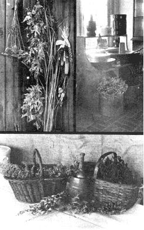
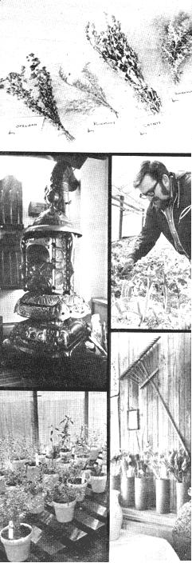
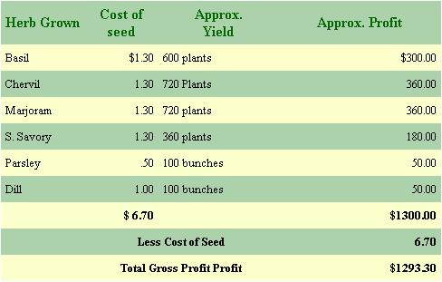
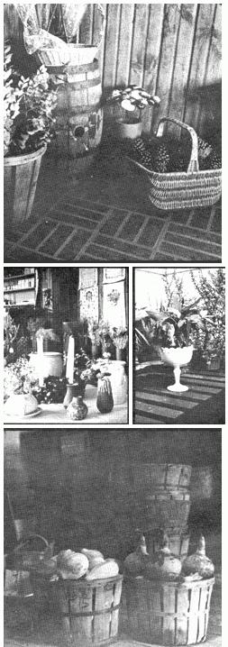

You certainly don't need a rich uncle, complicated equipment or a lot of land to set you up in the herb business. You can make your own beginning with little more than a 25 cents packet of seeds. Herb growing is easy and inexpensive and almost anyone with a backyard-sized plot (or even less!) can establish quite a profitable operation. You'd better be careful if you try it, though, because even the tiniest start can soon snowball into a rather large homestead enterprise. Consider the following case, for instance:
A couple of warm-hearted, down-to-earth people I know-who prefer to remain nameless-are in the business, and when they opened their herb and gift shop recently, I went up for a visit.
When I walked into the new shop, the clean, fresh,healthy smell of spicy herbs made my nose tingle. In side were wicker baskets piled high with dried herbs, and one wall-done in rough old barnwood framed with burlap-covered cornices-displayed a rainbow of dried flowers and grasses. The shelves were chock-fullof old-timey herb jellies, sugars and vinegars, and a beautiful antique parlor stove-polished to perfection gleamed in one corner. Next to the stove, on an old wooden bench, were bags of confections . . . the kind you won't find in a modern candy store. A big pic ture window held racks of already-arranged herbs and ,flowers in quaint, old fashioned containers and a near by greenhouse was stuffed with little pots of herbplants to set in kitchen windows and over forty varieties of herbs to plant in the garden.
From the looks of the shop, I was convinced that the herb business had to be good! But was it difficult to get into? Over a freshly brewed cup of mint tea, the proprietor of the new shop told me how his family had set up the operation.
About six years ago I paid a quarter for the seeds and planted a 20-foot row of sweet basil. That was the beginning of our herb business. But let me tell you how we happened to plant herbs in the first place.
A couple of years back, (before our `basil year' as we call it) we had a run of bad luck. Mostly, it was our fault. We were a couple of 'city slickers' back then-I'd been a factory worker and my wife, an elevator operator-and we didn't know too much about farming. We kind of lost our heads-plus a couple of sizeable down payments-over some heavy farm equipment which we didn't need at all. Our soil is light and sandy. But we were "green" and back then, the people around here weren't as friendly or helpful as they are now.
Anyway, the income from our fruit and vegetable crop, which we sold at the Farmer's Market in Cleveland, didn't come near to covering the blunders we made. Then, with our three youngsters to raise and a few other expenses thrown in, we almost lost the farm. I went back to factory work and-in my spare time-put in some plum tomatoes, scrounged up a pile of scrap lumber and built a 5' X 10' roadside stand in front of the house.
We were a couple of dirt farmers, scratching for everything we could get to keep our home. We sold anything that was edible and even my mom and dad (who live with us) did more than their share to help. They made goodies from the grapes growing out back and we sold these, too . . . up until the health inspector paid us a visit.
We were still barely managing, but by then the plum tomatoes were ready to harvest and, adding these to the rest of our produce, we trundled off to the Farmer's Market. That's when it happened!
The little Italian grandmas who bought our tomatoes wanted fresh sweet basil to use with them for making sauces. Of course I didn't have any, but then, neither did anyone else.
On our way home that day, we stopped at a nursery and bought a packet of basil seeds. When we got home I planted them, figuring if they didn't grow, I'd only be out a quarter.
Well, within a week we saw tiny little sprouts poping up and shortly after, the whole 20 foot row was crammed with little plants. We thinned them out to stand 5 inches apart-the way it said on the packet-and ended up with 50 plants! Once the basil reached a height of about a foot we cut it, wrapped the plants loosely in bunches of two and sold then at the market for 50 cents a bunch. Our profit was S 12.50.
Sure, it wasn't much and we wouldn't get rich quick, but growing that stuff had been easy. Besides, our customers (and a lot of other people who generally bought produce elsewhere) kept asking for more. That started the wheels turning! If there was such a demand . . . why couldn't we be the supply?
Once the marketing season was over, I started some heavy book reading. I was still sweating at the factory and didn't have much time to study on other herbs so I stuck with basil and learned everything I could, which was quite a bit.
For instance: Basil is an annual, grown from seed and should be planted in early spring, after the last frost. It grows in light, sandy (or even poor) soil in a sunny place with fairly good drainage. It doesn't need fertilizing.
I also learned that it is possible to grow bushier plants and get a second harvest, too. And, you don't necessarily have to sell basil in it's fresh form. It can be dried without spending a nickel on special equipment. In fact, if the yield is pretty large, it's often better to dry it. Then, you won't have to worry about selling wilted basil plants.
After gathering all that information, it boiled down to one thing. The amount of effort you put into growing your crop will determine the amount of profit you'll make. Well, with all this new-found knowledge under my belt, I felt pretty darned confident and I was ready for the big test.
That spring, I put in six rows of basil 20 feet long and a foot or so apart. That left room for thinning. As the plants grew, I pinched off the tips to make them bushier and it worked. These plants were as big as last year's two to a bunch!
Then, by cutting the stems of the plants before the buds opened, (basil can be cut to within three inches off the ground) I got a second harvest before the frost set in. In other words, our total yield from that crop was 600 plants-300 from each harvest. We sold them, fresh and dried, at 50 cents each and made a profit of $300.00 Oh, yes. The seed for that crop cost me $1.30.
The drying process was a little extra work, but not difficult at all. There are a lot of different methods for drying but here's how we did it. First, we cut the stems of the plants we wanted to dry just before the y started to bud and when the leaves were a rich green. Late afternoon is the best time, or when the dew is off the plants. We used sharp, sturdy scissors for cutting and they worked fine. By the way, we all smelled like basil for a week or so after, but it was a good, healthy smell.
Once the cutting was done, we washed the plants out in the backyard, using the garden hose set for a very fine spray. That way, we didn't lose too many leave Then we spread the basil out to let the excess water drain off. After that, we wound ordinary cotton string around the stems of each plant, stretched some line in our old chicken barn and hung them up to dry.
We used the chicken barn because it's relatively and dry and I tacked tar paper over the windows to keep out the sun. Basil can be dried in an attic as well or any room in the house that doesn't get too hot or sunny. The slower it dries, the more flavorful it'll be Drying time usually takes about two to three weeks. And that was it. I hadn't spent any money, except for the seed, and I had made a good profit.
Of course, after that fruitful harvest, we started talking about an even bigger basil crop and one day, just for fun, I did a little figuring on the sly. If the yield from 20 square feet of land-our original crop-was 50 plants, a quarter acre would yield approximately 27,200 plants. If I sold every one of them-at the usual price of 50 cents each-our profit could be $13,600! That figure addled my brain! Of course, I hadn't figured in the cost of seed and, most likely I'd have to hire helpers. Still...
But then I thought of something else. Sure, we had good outlet for basil through the Farmer's Market-BUT-would the demand be as big as our projected quarteracre crop? Thinking about it, I wasn't too sure. Besides, our customers were asking for other herbs and I had more or less promised to offer a variety the following season.
It was then late summer and we had to make a decision. Were we going to branch out or not? The family decision was unanimous. YES!
We started by visiting the Western Reserve Herb Society in Cleveland. This is one of six units of The Herb Society of America. The others are located in California, New England, New York, Philadelphia and St. Louis. They suggested sources of information, books and magazines to read, other herb growers to contact and. best of all-took us on a tour of their beautiful gardens. What a sight to see!
We then wrote letters, sent for catalogues and invested a few dollars in some herb books. I found one book in particular that covered nearly all the phases of herb growing. It's Herbs from the Garden to the Table by Dorothy Childs Hogner, Oxford University Press, New York. I'd say it was required reading for all beginners. While we waited for replies to our letters, I read it from cover to cover.
My wife's interest began to mount shortly after our visit to the Western Reserve gardens and she also started cracking the books. That was when she remembered the rosemary plant. She and Grandma always used some of it in stews and-from snipping at it for so many years-it had grown as huge as an evergreen shrub. We suddenly realized that we could grow more rosemary by taking cuttings from tile one we had . . . and that's just what we did.
I chose ten of tile greenest or youngest looking stems of the plant and-with a sharp knife-cut off, at right angles, tip sections about three inches long. Then I snipped away all but a few of the top leaves on each set and stuck some in water and others in a flat half filled with sand. The important point in rooting cuttings is to keep the "ground" damp. Once they have roots, (which takes about six weeks) set the starts in containers filled with good potting soil. After that, you can keep them growing in the house or, come spring, they can be put out in the garden in a shady spot until they take hold.
You can start rosemary from seed, but it takes a long time and the small seedlings grow very slowly. Also, in cold climates, rosemary plants must be taken indoors.
From the cuttings off our almost forgotten herb plant, we now had the beginning of that "variety" I had promised our customers.
Then one day the catalogues, magazines and pamphlets we had sent for began to arrive . . . and kept on coming for almost a week! My wife had sent for a lot more than she let on. But, no matter. They were all crammed with facts, time-saving tips and valuable information. And once I'd read through most of them, I felt certain I knew enough about herb growing to get the ball rolling. Besides, I was getting a pretty bad case of "factory-phobia".
That spring, I put in the same amount of basil as the year before, and also planted chervil, marjoram, summer savory, parsley and dill. These are annuals except for parsley, which is a biennial, and all are grown from seed.
Our crop consisted of six 20 foot rows each of basil, chervil, marjoram and summer savory, and two 20 foot rows each of parsley and dill. The young plants of chervil, marjoram and summer savory were thinned to stand four inches apart.
Chervil will flower when it's about two feet tall and since we planned to get two harvests, we cut the plants both times before the flowers bloomed. Sometimes it's possible to get three harvests because chervil will grow after the first frost and right up until freezing weather. This herb looks a lot like parsley but the leaves are more lacy and lighter green in color.
When the little sweet marjoram plants first appeared we didn't think they'd amount to anything-they were such tiny things. But then they seemed to shoot right on up until they were about 15 inches tall. By harvesting before the buds opened, we were able to get two cuttings from this herb, too. Marjoram looks like a small bush and has a mass of soft, small gray-green leaves.
Summer savory is just as easy to grow as the others but it's spindly and is easily knocked down by wind or a heavy rain. Don't thin the plants to stand more than four inches apart. This herb grows to a height of about 18 inches and the leaves are small, narrow, long and downy.
We followed the same harvesting, cutting and drying steps with chervil, marjoram and savory as we did with basil.
We planted dill twice; once in early spring to sell fresh, and again in late summer to dry. Dill seed should be sown thickly and the plants should not be thinned. This herb is easily wind-whipped, and since it sometimes grows three feet tall, the plants should have each other to lean on. Dill has bluish-green round stems, blue-green leaves and small yellow flowers.
The parsley took so long to come up we just about lost hope. But then I checked a book and found out what was wrong. I had forgotten to soak the seeds in water overnight and unsoaked parsley takes forever and a day to sprout. Ours finally did, though, and the plants were fat and bushy. They stood about 8 inches tall. We didn't cut the parsley but picked it once a week and had enough to sell right up until the first snowfall.
While most of our crop was sold at the Farmer's Market, we had painted a little sign to hang out on our roadside stand and had quite a number of people stop to buy herbs. Many of them were city folks and I guess buying fresh herbs was a welcome change to them because there were two or three who bought several bunches of every herb we grew.
That year, we tallied up our earnings and the ledger sheet looked something like this:
Not bad for a part-time herb grower! We immediately started a greenhouse fund with part of the money.
We began the fourth year in our new business by launching an all-out herb growing campaign for the water months. We had decided to grow even more herbs and we planned to start them in the house. But first there was work to do.
Grandpa began by gathering lumber from here and there (he's a great scavenger) for the flats and window boxes he planned to make. Grandma cleared knickknacks and whatnot off windowsills and conducted scavenger hunt of her own for potting containers. The youngsters stenciled hundreds of name tags for our herbs-to-be and my wife ordered herb seeds from Nichols Garden Nursery. That's where we bought the first seeds; their prices are reasonable and the quality is good.
And me? I was busy visiting some new friends-fellow herb growers I had discovered in the area. Mostly they were elderly folks who grew the plants for their own cooking use. A few had gardens inside (on bay windows and such) and some raised herbs in little patches of dirt outside their kitchen doors. Still others I found. grew herbs as border plants; between rows of vegetables; in cracks between bricks and flagstones; in very intricate designs and formal gardens.
Every person I visited eagerly "talked herbs" and I learned a great deal just by listening. What's more, many of them insisted on giving me their "surplus"-as they called it-and I came home one day with a packet each of burnet, sage and thyme seeds, a clump of chives and two tarragon plants . . . all of which just happened to be the ones I had planned to start in the house!
It was late afternoon by the time I got home, tenderly carrying my booty, and found the rest of the family nearly finished with their jobs. No one wanted to wait till morning to begin so we started our planting right then.
A good soil mixture for indoor herb growing is two parts loam, one part sand and one part compost. After partially filling 12" X 24" flats with this mixture, we thinly planted four rows of seeds in each container.
When we finished we had two flats each of burnet. sage and thyme which we watered, covered loosely with newspaper and placed in a warm room. And . . . tried not to look at every five minutes.
We potted the chive clump and tarragon plants and kept them in the kitchen. As soon as they grew a little. we were going to start snipping on them to make then grow bigger and thicker. That's one nice thing about most herbs . . . no matter how much you snip, they just grow back for more.
To keep from "flat peeking" we read more about the new herbs we were starting; to ourselves, the children and Grandma and Grandpa . . . who were also constant peeking.
We learned that burnet was easy to grow from seed planted outdoors, but if-in the first year-we wanted to have leaves for early summer salads, it was best t: start with plants. The leaves of burnet are formed like feathers with tiny white or rosy flowers that make the plants look almost like pineapples.
A sage bed, too, is best started from plants. It can easily be raised from seed but the plants will be too small to cut the first season. Cuttings can be taken from established plants to increase your sage growth. It's a very ornamental shrub and the leaves are a soft gray-green in color.
Thyme is another herb easy to grow from seed planted outdoors but you won't be able to cut it the first year. New plants can be grown from established ones by root division. Thyme has small green leaves and tiny lilac flowers.
Chives are one of the easiest herbs to grow. They can be started from seed but they're easier to grow from clumps of tiny bulbs. They multiply very quickly and a large chive plant can be pulled apart to make four more. You can keep doing this until you have as many plants as you want.
Tarragon must be grown from plants bought at a nursery. If you find seeds for sale, don't buy them. They won't be the true, or French, tarragon. Plants raised from seed will have an inferior flavor and you'll most likely end up throwing them in the garbage. Once you buy a tarragon plant, you can grow more by cuttings or root division.
Cutting, root dividing and layering are three ways to save money when growing herbs. Once you know how to do all three, (none of which are difficult) every plant you buy will be a one-time investment.
I've already told you about cutting. That's how we started more rosemary plants, remember? Root dividing is a simple matter of dividing one plant into two or more. All you do is loosen the soil around the plant (tarragon is a good example), and the roots will divide quite easily. Plant the divisions and water them regularly until they are established.
Layering is done with herbs such as sage and thyme. Once you put your plants out in the garden, take a stem and peg it to the ground. Cover the section with soil and water it regularly. Once a root growth appears, cut the stem from the mother plant.
Seed can also be saved from the annual herbs you grow each year such as basil, dill and so on. Gather the seeds when they're completely ripe, separate them from their hulls and store in glass jars to keep them from dampness and insects.
About four weeks after we planted our flats we noticed the tiny seedlings popping up and two weeks after that, they were ready to transfer to pots. That's when the fun started.
We had about 120 plants to pot and not nearly enough containers to put them in. Grandpa's window boxes and the pots Grandma had found were soon filled. But herbs can be planted in most anything as long as they have good drainage to keep the roots from getting waterlogged so, when we finally finished, we had herbs in milk cartons, soup and vegetable cans (which the youngsters painted in some pretty wild colors), battered bread pans (found in a rubbish pile), and anything else that we could punch holes in for drainage.
We had herbs growing everywhere, and they seemed to pop up in no time at all. Maybe it was the well water or the heat from our old coal furnace. But, I don't really think so . . . herbs are just naturally easy to grow.
It was fascinating to watch them grow and the children were especially interested in the different shapes of plants and leaves. Grandma and Grandpa were just as excited as the rest of us and, soon, the conversation in our household revolved mainly around herbs.
Grandma told about the old-timey days when herbs were as much a part of the kitchen as pots and pans. Meals weren't fancy back then; meat-when it was available-and plenty of potatoes and vegetables. It was the use of herbs that made a plain dish memorable. In fact, the way Grandma tells it, if you mixed in the right one, a pot of potato peels could make your mouth water!
"Herbs give food a flavor you can't beat," Grandma says. "In fact, we couldn't get along without them; the food would taste too bland. And another thing, herbs are a natural seasoning which is healthier."
Grandpa reminisced right along with Grandma, and remembered a couple of "medicinal" herbs that he was especially fond of!
That winter seemed to be the longest one we ever had. We watched the herbs grow, watered them faithfully and waited for Grandpa's annual weather prediction. Finally, one morning at the breakfast table, Grandpa announced he'd "heard the grass growing" and that was it . . . spring had to be just around the corner! As usual, he was right.
A few weeks later we started our fifth year by planting the indoor herb garden outdoors. We also doubled our crop of parsley, dill, basil, chervil, marjoram and summer savory. To these we added other herbs such as those used for teas . . . and comfrey for Grandma. She grinds it up, spreads it on bread and uses it as a poultice for temporary relief of arthritic pain.
All total, we planted about an acre and a half in herbs. A big job, but I took my vacation from the factory early and with everybody pitching in, it didn't take long.
Once the harvest was in we tallied up our profits and knew the herb business was for us. We had increased our income four times over the previous year; our chicken barn was full of dried herbs to sell through the coming winter and we had potted herbs for those who preferred fresh ones to keep in their kitchens. I composed my resignation from the factory and started shopping around for a greenhouse.
Since we now considered ourselves full-fledged herb growers, we advertised in the local-and a couple of big city-newspapers.
We had cards and stationery printed reasonably and used them to contact several wholesale houses, supermarkets, flower shops and stationery stores as outlets for our herbs.
Mix chives and crushed garlic in soft butter and use in vegetables or spread on hot muffins or bread. Or, mix up a variety of herbs (a pinch of each is more than enough), stir into soft butter and use the same way.
Knead small pinches of thyme or marjoram in any bread recipe for a good old fashioned flavor.
When you're cooking up a batch of beans, season with a pinch of summer savory during the last five minutes of cooking.
Sprinkle some caraway seed in your next sauerkraut dish.
For a breakfast that'll make you grin, beat some chives and a small amount of tarragon into scrambled eggs, or sprinkle some mint sugar over fresh grapefruit.
Pour hot white vinegar over tarragon and garlic; cover and let steep for two weeks. You can't buy a salad dressing like that at any store!
Replies cane in promptly from all our prospects and, within a few weeks we had four more outlets for our herbs; two flower shops, one stationery store and a wholesale house. Best of all, the Western Reserve Society contacted us too, and we sold them some plant for those beautiful gardens we had visited `way back when...
That winter we made plans to convert our old storage shed into an herb and gift shop and began renovating immediately. While my wife shopped for burlap, I made cornices. Then Grandpa helped me tear down the rest of an old barn that had been decaying on our property and we paneled one wall of the shed while Grandma glued burlap on the cornices.
Meanwhile, I found someone with a used greenhouse for sale and I brought it home piece by piece and set it up. We started more herb plants for next season.
The winter flew by before we could complete the shop and before we knew it, it was planting time again. In our sixth year we raised over 40 different kinds of herbs on two and a half acres of land. '
Our income? Quite substantial. We finished the shop and held our grand opening in November of 1970.
In the meantime, people began contacting us to ask if they could display some of their wares in our shop We agreed. We figure we're all just little people starting out together.
For instance, there's a fellow who compounds pure old-fashioned cake flavorings; a lady who makes pictures from dried flowers; a small, local dealer who displays antiques in our shop and a housewife who sews novelty pillow covers. Our herb jellies are put up by two sisters in Hudson and they make the herb vinegars we sell as well.
We've found that herb products are the best moneymakers and, while we make jellies and vinegars too, it's only for our own use. If you plan to sell anything like that, check with the health department in your state first. We didn't know the rules and regulations governing edible herb products when we began and we narrowly escaped having to pay a heavy fine.
Incidentally, many of the herbs used in jellies and vinegars can be grown in the house and processed right in your kitchen with no special equipment. Catnip, too, can be grown indoors or on just a very small bit of land. The yield is big and a few plants can make enough catnip toys to supply that extra bit of income. However, if you design a toy, make sure you apply to the Patent Office in Washington, D. C. for a design patent.
Is it worth trying to grow herbs indoors? Well, I personally know two people who are growing herbs inside and, in both cases, the indoor garden (and the products made from it) is that individual's sole source of income.
In closing, let me say that I've used a row length of 20 feet in relating my story simply as a good way of giving an approximate yield and profit. We live in the northeastern section of the United States and ours is an excellent climate for growing herbs but in many cases, and in other climates, the yield can be even greater than I've indicated here. Your success will also depend on the time you have available and the effort you put into growing your crop.
I admit, on paper, the business may sound involved and difficult . . . but believe me, it isn't. Different herbs have different harvesting times and picking and cutting can be staggered. The work involved can be done by a woman or, for that matter, by children.
You can hold a full-time job and still grow herbs like we did while gradually building up to whatever it is you want; an income entirely from herbs or just enough to tide you over. But whatever you decide, adding a little spice to your life will be the best thing you ever did.
AUTHOR'S NOTE: In getting this article together, I spent many hours on the phone, digging through the library, bugging the biology department of our high school, visiting various nurseries and . . . staring into space.
Different people told me different things: Herbs are easy to grow-they're hard to grow; you can make a profit-you can't make a profit. The point is . . . who's right?
Me? I'll stick with my herb growing friends. I know them; they appear to be very successful and, besides, I've spent more time at their shop lately than at home. If MOTHER didn't need me, I'd go into the business myself. I've got enough little seedlings of my own started in the house.
|
 PHOTOGRAPHS BY KEITH SHOEMAKER |
 |
 |
|
 |
|
|